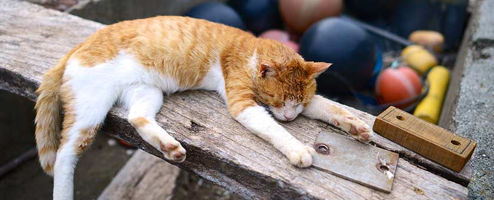
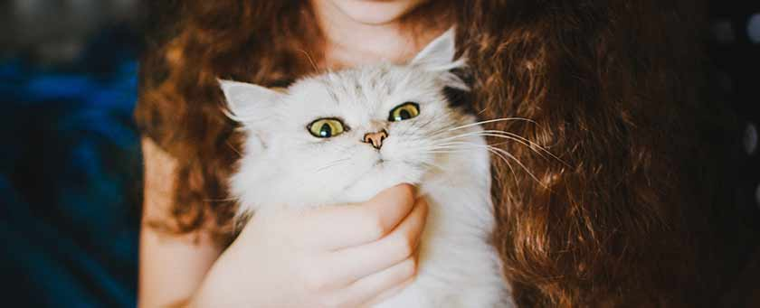

貓咪洗澡簡單教學: 自己的洗法，分享給大家。用具:1.小澡盆，可讓貓貓舒適的在裡面為佳，我選的是比貓身寬一點的。2.水溫溫度計，可放在水裡洗澡量水溫好用。3.沐浴精(目前因有霉菌所以洗麻辣洗沐浴精)4.毛巾兩條以上，我準備的是兩小一大。5.伊莉莎白頭套6.自己坐的小椅子7.吹風機。7.口罩，防止吸入過多貓毛。

準備加蓋的垃圾桶-我們家的大貓對垃圾桶是沒什麼興趣的，也有可能他剛來我們家時我跟他說”我們永遠都有東西吃，不要翻垃圾桶喔~”這孩子很乖，我說了幾次之後他就不趴在垃圾桶上望了。

大概是在今年4月初吧，我發現我們家大兒子錢錢的左手臂上出現了一元硬幣大小的脫毛，那時我嚇了一跳，沒想到自己養的貓咪也有得到香菇的一天。可能因為搬新家，家裡都沒打掃，很多地方都有霉菌灰塵，所以抵抗力有待加強的大兒子就中標了。